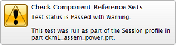
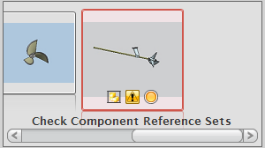
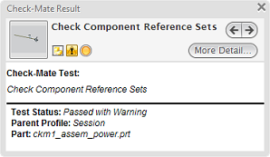

从视图样式列表中选择流列表+树 。
在结果树中，将光标悬浮在检查组件引用集节点上，然后查看汇总报告。

双击检查组件引用集节点。
NX 将使该节点在树中变为激活状态，滚动至流列表中的相应项并打开 Check-Mate 结果窗口。


在 Check-Mate 结果窗口的右上角，如果细节级别命令更多细节已显示，则点击它。
查看结果信息。
报告的测试状态一节将显示无任何组件包含在装配文件的任何引用集中。
关闭 Check-Mate 结果窗口。
您可以在激活 Check-Mate HD3D 工具的同时处理装配和组件部件文件，您需要根据您公司有关引用集的标准来解决这个问题，现在，您只需要从显示中移除结果。
在 Check-Mate HD3D 工具的结果树中，右击检查组件引用集节点并选择删除结果。
在删除条目信息框中点击是以确认删除操作。
NX 将从 Check-Mate HD3D 中移除测试结果。
该测试并未从设置测试对话框的选定的测试列表中删除，如果您再次运行 Check-Mate 测试，则检查组件引用集测试的结果将会再次显示在 Check-Mate HD3D 工具中。